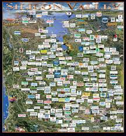

Silicon Valley
As you know, Google, Apple, Facebook are locating same place which is San Jose, San Francisco in California. This place is gathering many and famous IT companies. Also, this place is gathering many entrepreneurs and new Technology in here. Thus, this city is called The most advance city in the world!! Silicon Valley is a nickname for the southern portion of the San Francisco Bay Area, in the northern part of the U.S. state of California. The "valley" in its name refers to the Santa Clara Valley in Santa Clara County, which includes the city of San Jose and surrounding cities and towns, where the region has been traditionally centered. The word "silicon" originally referred to the large number of silicon chip innovators and manufacturers in the region. As more high-tech companies were established across the Santa Clara Valley, and then north towards the Bay Area's two other major cities, San Francisco and Oakland, the "Silicon Valley" name eventually came to refer to all high-tech businesses in the region.
 This picture show location of Company These are Siliconvalley's company
Click California States

Salary
Silicon Valley is also amazing place. The big Silicon Valley tech companies have a reputation for minting millionaires. Not everyone is Mark Zuckerberg, of course, but even the average employee is bringing in a salary that would make most of America jealous, according to a new study out by a new study out by PayScale. Ten years into their job, which is how PayScale defines “mid-career,” employees at the biggest tech companies in the country easily make more than $100,000, or more than twice the average American household income, which is just over $50,000. At places like Google and Facebook, the median employee is making six figures less than five years into her career. The best company to work for in the beginning of a tech career based on this pay data is Facebook, which pays people with less than five years experience $116,800 at the median. After 10 years of experience, it pays more to work at LinkedIn, which pays mid-career employees a median of $159,600.

Back to Top